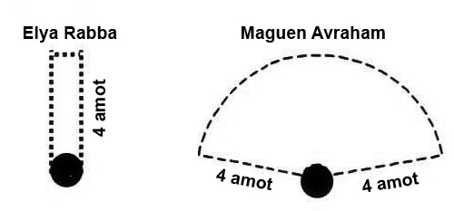
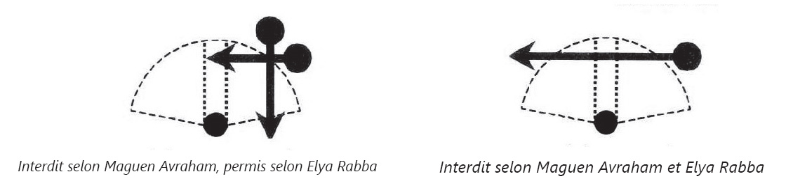
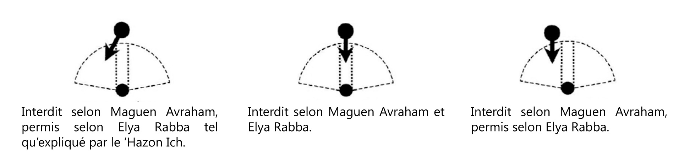

La ‘Amida est le sommet de la prière, et toutes les parties qui la précèdent constituent, dans une large mesure, une préparation à ce sommet. Le fidèle monte de degré en degré, du rappel des sacrifices aux versets de louange, des versets de louange aux bénédictions du Chéma, jusqu’à ce qu’il puisse franchir le portique supérieur, le monde de l’Emanation (‘olam ha-Atsilout, cf. chapitre 13 § 2), et se tenir en prière devant Dieu. Certes, la lecture du Chéma est une mitsva de rang toranique, et c’est une obligation en soi de le réciter, indépendamment même de la prière. Toutefois, nos sages ont décrété que la lecture du Chéma doit se faire, avec ses bénédictions, avant la ‘Amida, afin qu’elles constituent une préparation à celle-ci. En effet, grâce à l’acquisition de la foi exprimée dans le Chéma et ses bénédictions, et grâce à la bénédiction de la Délivrance (Gaal Israël), on peut s’élever au plus haut degré de la prière de la façon la plus parfaite.
Dans la mesure où la ‘Amida est le sommet de la prière, les règles qui la régissent sont plus rigoureuses que celles d’autres sections de l’office. Par exemple, il faut venir à l’office dans des vêtements honorables, car durant la ‘Amida nous nous tenons devant le Roi ; il n’y a pas d’exigence semblable en ce qui concerne la lecture du Chéma et de ses bénédictions, par lesquels nous recevons le joug de la royauté du Ciel et louons Dieu, mais au cours desquels nous ne nous trouvons pas à ce niveau supérieur consistant à « nous tenir devant le Roi » (Choul’han ‘Aroukh, Ora’h ‘Haïm 74, 6 ; 91, 1).
De même, de nombreuses règles que nous avons étudiées, concernant l’emplacement qui convient à la prière, visaient essentiellement la ‘Amida. Par exemple, le fait de ne pas prier à un endroit surélevé, ou dans un immeuble totalement ouvert, la nécessité d’avoir des fenêtres, la mitsva de prier au sein d’un minyan et à la synagogue, la nécessité de se fixer un endroit régulier pour prier, l’absence d’élément faisant écran entre le fidèle et le mur, le fait de ne pas prier à côté de son maître, ni derrière lui (comme il est expliqué au chapitre 3). Et puisque la ‘Amida forme une partie de la prière dans son ensemble, on s’efforce, dans le même élan, d’observer durant l’ensemble de l’office toutes les règles susmentionnées. Mais dans le cas où l’on ne peut réciter les Pessouqé dezimra (versets de louange) et les bénédictions du Chéma à l’endroit le mieux situé de ces différents points de vue, on s’efforce à tout le moins de dire la ‘Amida à l’endroit le mieux situé.
Nous avons coutume d’avancer de trois pas avant de réciter la ‘Amida, afin d’exprimer notre volonté de nous rapprocher de Dieu et de nous tenir devant Lui (Rama 95, 1). Celui qui se tient déjà à l’endroit prévu pour dire la ‘Amida n’a pas besoin, à l’approche de celle-ci, de faire trois pas en arrière pour revenir en avant. Du reste, par le fait même de venir à la synagogue, on se rapproche déjà de la prière, et l’on parcourt à cette fin plus de trois pas ( Elya Rabba). D’autres disent que, même si l’on s’est déjà rendu à son lieu de prière, il est souhaitable, à l’approche de la ‘Amida, de revenir en arrière et de parcourir de nouveau trois pas en avant, pour gagner l’endroit où l’on prononce la ‘Amida (Ben Ich ‘Haï, Bechala’h 3 ; Kaf Ha’haïm 95, 7). Le mieux à faire est de marquer une petite interruption entre les pas en arrière et les pas en avant, afin de ne pas paraître aller et venir. Aussi, lorsqu’on arrive au passage Tehilot la-E.l E-lion (« Louanges au Dieu suprême »), on fait trois pas en arrière, puis, quand on s’apprête à conclure la bénédiction Gaal Israël (« qui délivras Israël »), on fait trois pas en avant. De même, aux offices de Min’ha et d’Arvit, dès le début du Qaddich qui précède la ‘Amida, on fera trois pas en arrière, puis, juste avant de commencer la ‘Amida, on avancera de trois pas (coutume du Maharil, Michna Beroura 95, 3).
Afin de ne pas marquer d’interruption entre la mention de la Délivrance et la ‘Amida, on a soin de faire ses trois pas en avant alors que l’on n’a pas encore terminé de dire la bénédiction Gaal Israël, afin qu’immédiatement après la conclusion de celle-ci, on se tienne déjà au lieu de sa prière et que l’on commence à dire Ado-naï, sefataï tifta’h (« Eternel, ouvre mes lèvres »), verset par lequel débute la ‘Amida .
Avant la ‘Amida, le fidèle doit éloigner de son esprit toutes les choses susceptibles de perturber sa concentration. Si l’on est enrhumé, on se mouchera avant la ‘Amida, afin de ne pas avoir à se moucher au cours de celle-ci. Si l’on a une mucosité dans la gorge, susceptible d’être gênante, on l’expulsera avant de prier, afin qu’elle ne nous perturbe pas (Choul’han ‘Aroukh 92, 3 ; cf. chap. 6). Si l’on a besoin de se moucher au cours de la ‘Amida, on le fera de la façon la plus discrète. Celui qui est contraint de bâiller durant la ‘Amida posera la main sur sa bouche. Car celui qui se tient en prière doit être très attentif à l’honneur du Ciel, et tout ce qui est considéré comme impoli en présence de son prochain est interdit au moment de la ‘Amida (cf. Choul’han ‘Aroukh 97, 1-2).
Durant les différentes parties de la prière, le fidèle peut s’orienter en quelque direction qu’il souhaite. Mais dès lors qu’il arrive au sommet de la prière, et qu’il se lève pour se tenir devant le Roi de l’univers durant la ‘Amida, il devra se tourner vers Jérusalem, vers le lieu que Dieu a choisi pour faire résider Sa Présence dans le monde.
Si l’on prie en-dehors de la terre d’Israël, on se tournera en direction de la terre d’Israël, et l’on orientera son cœur vers Jérusalem, vers le site du Temple et vers le Saint des Saints (Qodech haqodachim). Si l’on prie en Israël, on se tournera en direction de Jérusalem, et l’on orientera son cœur vers le site du Temple et vers le Saint des Saints. Si l’on prie à Jérusalem, on se tournera vers le site du Temple et l’on orientera son cœur vers le Saint des Saints (Berakhot 30a ; Choul’han ‘Aroukh 94, 1).
Par conséquent, ceux qui prient sur l’esplanade du Mur occidental (le Kotel) doivent s’orienter durant la ‘Amida en direction du lieu du Sanctuaire. C’est-à-dire que ceux qui se trouvent sur l’esplanade ouverte doivent se tourner légèrement sur la gauche, et que ceux qui se trouvent dans l’enceinte des hommes, au milieu de la galerie couverte, doivent s’orienter face au mur.
On a l’usage de fixer l’arche sainte des synagogues sur le mur orienté vers Jérusalem, de façon que les fidèles récitant la ‘Amida soient également tournés vers l’arche sainte. Cependant, l’essentiel est de prier en direction de Jérusalem. Aussi, si en raison d’une erreur ou d’une contrainte, l’arche sainte n’est pas véritablement orientée en direction de Jérusalem, on se tournera, au moment de la ‘Amida, dans la direction de Jérusalem (Michna Beroura 94, 9). Mais si toute l’assemblée se trompe et s’oriente dans la direction de l’arche sainte, il vaut mieux ne pas se séparer de la communauté, et l’on se tiendra dans la même direction que l’assemblée ; toutefois, on tournera sa tête vers Jérusalem (Michna Beroura 94, 10).
Si l’on ne sait pas quel côté de la pièce est orienté en direction de Jérusalem, on priera dans quelque direction que l’on voudra, et l’on orientera son cœur vers son Père qui est au Ciel (Choul’han ‘Aroukh 94, 3). Même s’il apparaît après coup que l’on s’est trompé, on n’a pas besoin de répéter sa prière en se tournant vers Jérusalem.
Durant les Pessouqé dezimra et les bénédictions du Chéma, on peut être assis ou debout. Mais dès que l’on arrive à la ‘Amida, on doit se tenir debout et pieds joints. En se tenant debout, l’homme manifeste sa disposition totale, de la tête aux pieds, à l’approche de la prière. De plus, le fait d’être debout est une expression de révérence et de crainte à l’égard du Roi de l’univers. Aussi, il ne faut s’appuyer sur aucun support durant la ‘Amida, car celui qui appuie un tant soi peu sa personne ne se tient pas d’une façon empreinte de crainte. En cas de contrainte, par exemple si l’on est faible et obligé de s’appuyer, on s’efforcera de ne s’appuyer que légèrement, de sorte que, si l’appui était ôté subitement, on resterait debout par l’effet de ses propres forces. Par cela, et bien que cette façon ne soit pas empreinte de crainte, on est néanmoins considéré comme priant debout ( Choul’han ‘Aroukh 94, 8 ; Michna Beroura 22).
On joint les jambes de manière qu’elles paraissent former une jambe unique. La raison en est que l’écartement des jambes reflète le côté matériel de l’homme ; il représente également la course, à la poursuite des affaires de ce monde. Aussi, les prêtres, lorsqu’ils montaient à l’autel, marchaient de façon à accoler le talon du pied droit au gros orteil gauche, et inversement ; de la même façon, pendant la ‘Amida, nous nous abstenons d’écarter les jambes. De plus, la jonction des jambes représente le rassemblement des forces réalisatrices présentes en nos jambes, pour mettre ces forces au service exclusif de Dieu, et manifester que nous n’avons qu’une volonté, celle de nous tenir en prière devant Lui. Nos sages ont déduit cela de l’exemple des anges, au sujet desquels il est dit : « Leurs jambes sont une jambe rectiligne » (Ez 1, 7), c’est-à-dire que leurs jambes sont accolées l’une à l’autre, au point qu’elles semblent constituer une seule et même jambe (Berakhot 10b ; Talmud de Jérusalem I, 1 ; voir Maharal, Netiv Haavoda 6).
Il faut joindre les pieds l’un à l’autre dans toute leur longueur, afin qu’ils paraissent être autant que possible un seul et même pied, et non comme ceux qui ne joignent que leurs talons (Choul’han ‘Aroukh 95, 1, élèves de Rabbénou Yona). A posteriori, si l’on a prié jambes disjointes, on est quitte (Michna Beroura 1, Kaf Ha’haïm 2).
Un malade qui ne peut se tenir debout priera assis. Si même s’asseoir lui est impossible, il priera couché. Selon plusieurs décisionnaires, si, avant l’expiration de l’heure de récitation de la ‘Amida que l’on n’a pu dire debout, on recouvre ses forces et l’on peut se lever, on devra répéter sa ‘Amida, car la mitsva de réciter la ‘Amida se réalise essentiellement debout (Choul’han ‘Aroukh 94, 9). Toutefois, les A’haronim s’accordent à dire en pratique que, si l’on a prié assis ou couché, on est quitte a posteriori, et que, même si l’on peut se relever après cela, on n’a pas besoin de répéter sa ‘Amida (Michna Beroura 94, 27, Kaf Ha’haïm 34).
Celui-là même qui est contraint de prier assis ou couché, doit s’efforcer de joindre les pieds et de fléchir le corps aux moments de prosternation. Si l’on est assis sur un fauteuil roulant, on reculera quelque peu son fauteuil à la fin de sa ‘Amida, dans la mesure des trois pas par lesquels on achève sa prière (voir plus loin, paragraphe 16).
Le fidèle en prière doit incliner quelque peu la tête, de manière que ses yeux regardent vers le bas en signe de modestie ; il doit imaginer qu’il se trouve au Temple, et orienter son cœur en haut vers le Ciel (Yevamot 105b ; Choul’han ‘Aroukh 95, 2).
Les kabbalistes font l’éloge de celui qui prie les yeux fermés. Cependant, celui qui lit dans son rituel (sidour) se conduit lui aussi selon la règle telle que la loi l’a fixée a priori. De nombreux A’haronim conseillent de prier en suivant le texte dans son sidour, car de cette façon, on peut se concentrer davantage dans sa prière (Michna Beroura 95, 5 ; Kaf Ha’haïm 9-10 ; cf. Béour Halakha au sujet du Maamar Mordekhaï).
En ce qui concerne les mains, Maïmonide écrit que l’on doit poser les mains sur son cœur, serrées l’une sur l’autre, la droite sur la gauche. De cette façon, on se tient comme un élève devant son maître, avec crainte et révérence (Hilkhot Téphila 5, 4). C’est aussi ce qu’écrit le Choul’han ‘Aroukh (95, 3) et ce qu’expliquent les Kavanot de Rabbi Isaac Louria (Kaf Ha’haïm 95, 12). Mais de nombreux décisionnaires pensent que tout dépend de la coutume locale : dans la ville où vivait Maïmonide, on avait en effet l’usage de se tenir devant les monarques et les ministres de la façon ci-dessus décrite ; mais dans d’autres lieux, la coutume était différente. Par exemple, dans les pays d’Europe, on avait l’usage de se tenir mains jointes, et dans les pays ismaélites, on se tenait mains derrière le dos, comme pour exprimer son absence de mains – de pouvoir – en dehors de la permission octroyée par son vis-à-vis (Mahari Abouhav, cité par le Beit Yossef ; Michna Beroura 95, 6). D’après cela, de nos jours, en plus de la manière décrite par Maïmonide, on peut se tenir bras le long du corps, ou mains posées sur son pupitre de prière (stander ), tenant le sidour, car ces différentes situations sont, elles aussi, considérées comme des manières honorables de se tenir. En revanche, il ne faut pas mettre les mains dans les poches, ou sur les hanches, car il ne convient pas de se tenir ainsi devant des personnalités dignes d’égards.
Nombreux sont ceux qui ont l’habitude de se balancer durant la ‘Amida ; le Rama écrit (Ora’h ‘Haïm 48, cf. Michna Beroura 95, 7) qu’il convient de se conduire ainsi a priori, afin d’exprimer l’émotion et le frémissement qui doit saisir le fidèle en prière, et afin d’associer le corps au service de la prière, conformément au verset : « Tous mes os diront : “Eternel, qui est comme toi ?” » (Ps 35, 10). Face à cela, le Chla écrit qu’il ne faut pas se balancer durant la prière, et qu’au contraire, c’est précisément le fait de se tenir debout sans mouvement qui amplifie la kavana. De plus, ce n’est pas une marque de respect que de se balancer, et si un homme se présentait devant un roi de chair et de sang et commençait à se balancer de tout son corps, le roi le chasserait immédiatement de devant lui ; par conséquent, dit-il, il est évident qu’il ne faut pas se conduire ainsi durant la prière. Dans cette perspective, lorsque certains des sages disent qu’il est bon de se balancer, ils ne parlent que de moments où l’on étudie la Torah, ou de moments où l’on dit des cantiques et des louanges ; en revanche, pour la ‘Amida, durant laquelle on se tient devant le Roi, prière profonde et intérieure, il ne convient pas du tout de se balancer : seules les lèvres remuent (Chla, traité Tamid,Ner Mitsva). Dans la mesure où chaque coutume peut s’appuyer sur une source valable, chacun se conduira de la façon qui contribuera le plus à sakavana. En particulier, pour celui qui s’est habitué à se balancer suivant l’usage répandu, il sera difficile de se concentrer sans balancement ( Maguen Avraham, Michna Beroura 48, 5 ; voir Kaf Ha’haïm 48, 7-9).
En cinq endroits de la ‘Amida, les sages prescrivent de se prosterner : au début et à la fin de la bénédiction des patriarches (Birkat avot, première des dix-neuf bénédictions), au début et à la fin de la bénédiction de la reconnaissance (Modim, dix-huitième bénédiction), ainsi qu’à la fin de la ‘Amida, lorsque l’on recule de trois pas. Les sages ont prescrit de se prosterner lors de ces deux bénédictions, car ce sont les deux plus importantes, et il faut s’efforcer de se concentrer davantage quand on les récite (cf. Choul’han ‘Aroukh 101, 1 ; Michna Beroura 3). Si un fidèle se prosterne au début ou à la fin de quelque autre bénédiction, on lui enseigne qu’il ne faut pas le faire, afin qu’il ne se détourne pas du décret des sages, et afin qu’il ne paraisse pas s’enorgueillir en se prenant pour plus juste que les autres. En revanche, au milieu des bénédictions, il est permis de se prosterner (Choul’han ‘Aroukh 113, 1 ; Michna Beroura 2).
Dans la première bénédiction, on se prosterne sur les mots Baroukh Ata (« Béni sois-Tu »), et l’on se redresse en disant Ado-naï (« Eternel »). Dans Modim, on se prosterne sur les mots Modim ana’hnou lakh (« Nous reconnaissons devant Toi »), et l’on se redresse en disant Ado-naï (Choul’han ‘Aroukh 113, 7 ; Michna Beroura 12. Sur la prosternation à la fin de la ‘Amida, voir § 13).
On se prosterne « jusqu’à ce que toutes les vertèbres de la colonne soient saillantes », c’est-à-dire que les vertèbres fassent saillie sur le dos. On incline la tête et le dos, jusqu’à ce que la face arrive à une hauteur intermédiaire entre le cœur et les hanches ; mais on n’incline pas la tête jusqu’au niveau de la ceinture, car cela paraîtrait présomptueux. Une personne âgée, un malade, à qui il est difficile de se pencher, incline la tête selon ses possibilités (Choul’han ‘Aroukh 113, 5). On doit se pencher rapidement, afin de montrer son désir de se prosterner devant l’Eternel béni soit-Il ; quand on se redresse, on doit le faire lentement, comme une personne qui souhaiterait prolonger sa prosternation devant Dieu (Choul’han ‘Aroukh 113, 6).
Il y a deux coutumes quant à la façon de se prosterner : selon la coutume ashkénaze, au moment où l’on dit Baroukh, on plie les genoux ; lorsqu’on dit Ata, on se courbe jusqu’à ce que les vertèbres fassent saillie. Dans la formule initiale deModim, où l’on ne dit pas Baroukh, on se courbe immédiatement, sans plier préalablement les genoux (Michna Beroura 113, 12 ; cf. Qitsour Choul’han ‘Aroukh 18, 1).
Les Séfarades, se fondant sur Rabbi Isaac Louria, ont l’usage de se prosterner en deux temps : on courbe d’abord le corps (sans plier les genoux), puis la tête ; de même, quand on se redresse : on redresse d’abord le corps, puis la tête (Kaf Ha’haïm 113, 21).
Nous apprenons de la prière de Hanna (I Samuel 1-2) de très nombreuses et grandes règles. Hanna se tenait debout, demandant à Dieu de l’exaucer en lui donnant un fils. Sa prière fut agréée : elle eut le mérite de mettre au monde le prophète Samuel, le plus grand des prophètes d’Israël après Moïse notre maître, que la paix repose sur lui. Or il est dit dans le premier livre de Samuel (1, 13) : « Hanna parlait en son cœur, seules ses lèvres bougeaient, mais sa voix ne se faisait pas entendre ». Nos sages disent à ce sujet (Berakhot 31a) : « “Elle parlait en son cœur” – cela nous apprend que celui qui prie doit se concentrer (prier avec kavana) ; “seules ses lèvres bougeaient” – cela nous apprend que celui qui prie doit articuler les mots ; “mais sa voix ne se faisait pas entendre” – cela nous apprend qu’il est interdit de hausser la voix durant la ‘Amida. »
Le but de la ‘Amida est d’exprimer devant Dieu les aspirations profondes de l’âme. Aussi ne convient-il pas de la dire à voix haute et de l’exposer à l’extérieur. D’un autre côté, on ne s’acquitte pas de l’obligation de prier par la seule pensée, car toute idée doit être l’objet d’une certaine expression concrète en ce monde. Notre volonté intérieure est bonne ; les corruptions sont extérieures ; aussi notre travail consiste-t-il à exprimer notre bonne volonté de façon effective. C’est pourquoi la mitsva la plus subtile a besoin elle-même d’une certaine expression, par le biais de l’articulation des mots par les lèvres.
Les usages divergent quant à savoir la façon convenable de prier à voix basse. Selon la majorité des décisionnaires et une partie des kabbalistes, le fidèle doit faire entendre sa voix à sa propre oreille, de telle manière que lui seul puisse entendre sa propre voix, à l’exclusion de ses voisins se trouvant à côté de lui (Choul’han ‘Aroukh 101b ; Michna Beroura 5-6). Selon la majorité des kabbalistes, la ‘Amida est une prière si profonde et intérieure que le fidèle ne doit même pas faire entendre sa voix à sa propre oreille, mais doit se contenter d’articuler les lettres avec ses lèvres (Kaf Ha’haïm 101, 8). Il convient que chacun se conforme à l’usage de ses pères, ou à celui par lequel on se concentre le mieux.
A posteriori, même si l’on a fait entendre sa voix durant la ‘Amida, on est quitte de son obligation. Aussi, celui à qui il est difficile de se concentrer en priant à voix basse, est autorisé à prier à voix haute quand il se trouve seul. Mais au sein de la communauté, on ne priera en aucun cas à voix haute, afin de ne pas déranger les autres fidèles (Choul’han ‘Aroukh 101, 2). Il vaut mieux prier à voix basse au sein d’un minyan, même si l’on parvient moins bien à se concentrer, car la prière dite en minyan est agréée (Michna Beroura 101, 8).
Dans les autres parties de la prière, telles que les bénédictions du Chéma et les Pessouqé dezimra, qui ne sont pas aussi intérieurs et profonds que la ‘Amida, tous les avis s’accordent à dire qu’il faut faire entendre sa voix à son oreille. Quant au premier verset du Chéma, on a coutume de le dire à haute voix, afin d’éveiller la kavana (Choul’han ‘Aroukh 61, 4). De même, on répond amen et Baroukh Hou ouvaroukh Chémo à haute voix. Il faut en particulier s’efforcer de répondre à haute voix au Qaddich (Choul’han ‘Aroukh 56, 1).
Selon la halakha, il est permis de prier dans une langue étrangère (Sota 32a) ; toutefois, le meilleur mode d’accomplissement de la mitsva consiste à prier en hébreu, parce que c’est en cette langue que les membres de la Grande Assemblée ont rédigé le texte de la prière, et parce que l’hébreu est la langue sainte, par laquelle le monde a été créé (cf. ci-dessus chap. 15 § 9, où l’on dit que telle est aussi la règle en ce qui concerne le Chéma).
Certes, selon le Rif, ce n’est que si l’on prie au sein d’un minyan que l’on est autorisé à dire la ‘Amida dans une langue étrangère, car alors la Présence divine réside sur le lieu, et la prière sera agrée, bien qu’elle ne soit pas dite dans la langue sainte ; tandis que, si l’on prie seul dans une langue étrangère, la ‘Amida n’est pas agréée. Néanmoins, l’opinion de la majorité des décisionnaires est conforme à celle du Roch, selon lequel on peut prier, même seul, dans une langue étrangère, à l’exception de la langue araméenne, dans laquelle il ne faut pas prier seul. C’est en ce dernier sens qu’est fixée la halakha (le Choul’han ‘Aroukh 101, 4 présente cette opinion en dernière position, introduite par l’expression yech omrim – « certains disent » –, après avoir introduit l’opinion opposée par la même expression ; or le principe veut que, dans un tel cas, la halakha soit conforme au dernier yech omrim ; Michna Beroura 18).
Autre avantage de la prière dite en hébreu : celui qui prie en cette langue, même s’il ne la comprend pas, est quitte de son obligation, à condition de comprendre au moins le premier verset du Chéma et la première bénédiction de la ‘Amida. Cela n’est pas le cas pour une autre langue : on ne se rend quitte que si on la comprend (Michna Beroura 101, 14 ; 124, 2).
En pratique, celui qui ne comprend pas l’hébreu est autorisé à choisir sa façon de prier : d’un côté, il y a un avantage à prier dans la langue que l’on connaît, car on peut alors se concentrer davantage ; d’un autre côté, si l’on prie en hébreu, on a l’avantage de prier dans la langue sainte (cf. Béour Halakha 101, 4 ; Kaf Ha’haïm 16).
L’autorisation de prier dans des langues autres que l’hébreu n’est donnée qu’en cas de besoin individuel circonstanciel, pour ceux qui ne comprennent pas l’hébreu. En revanche, il est interdit de mettre sur pied un minyan qui prierait de façon régulière dans une langue étrangère. Ce fut l’une des fautes des Réformateurs que de traduire la prière en allemand pour l’usage public, et de faire ainsi oublier à leurs enfants la langue sainte, ménageant ainsi une large brèche vers l’abandon du judaïsme et l’assimilation (‘Hatam Sofer, Ora’h ‘Haïm 84, 86 ; Michna Beroura 101, 13 ; le Sridé Ech 1, 9 interdit même la lecture publique d’un seul poème liturgique dans une langue étrangère).
Quand on récite la ‘Amida, on doit prier avec kavana, c’est-à-dire prêter attention à ce que l’on dit, et s’efforcer de ne pas laisser divaguer son esprit vers des préoccupations étrangères pendant la prière. Si des pensées étrangères viennent à l’esprit, on les écarte de son esprit et l’on revient à sa prière. Même si l’on ne parvient pas à se concentrer sur tous les mots de la prière, on essaie à tout le moins de se concentrer sur la récitation de la formule finale de chaque bénédiction (les mots Baroukh ata Ado-naï , suivis de leur conclusion). Si l’on ne peut pas se concentrer à chaque bénédiction, on s’efforcera de se concentrer durant la première (Birkat Avot, bénédiction des patriarches) et durant la dix-huitième, Modim (bénédiction de la reconnaissance), au début et à la fin desquelles on se prosterne. A tout le moins, on doit se concentrer durant la bénédiction des patriarches, par laquelle débute la ‘Amida.
Si l’on a déjà prié, et que l’on ne se soit pas concentré durant la bénédiction des patriarches (Birkat avot), la règle stricte voudrait que l’on répétât la ‘Amida, car la kavana durant la première bénédiction est une condition de validité de la ‘Amida. Néanmoins, à la suite de la chute des générations et des soucis de l’esprit, la capacité de concentration s’est affaiblie. Aussi, les décisionnaires modernes ont donné pour instruction de ne pas répéter la ‘Amida dans un tel cas, car il est à craindre que l’on n’oublie, même la deuxième fois, de se concentrer durant la Birkat avot, et que cette répétition ne soit vaine (Rama 101, 1, Kaf Ha’haïm 4).
Si l’on est sur le point de conclure la récitation de la Birkat avot, et que l’on s’aperçoive que l’on ne s’est pas concentré durant sa lecture, on peut, tout le temps que l’on n’a pas prononcé le nom divin (Ado-naï) concluant la bénédiction, reprendre sa récitation à partir de Elo-hé Avraham (« Dieu d’Abraham »), en se concentrant cette fois (Michna Beroura 101, 4 au nom du ‘Hayé Adam). Si l’on a déjà prononcé le nom divin, on concluera la bénédiction avec kavana, et il sera bon de repasser en pensée sur les mots de la bénédiction des Patriarches. En effet, selon Maïmonide, la pensée peut être considérée comme ayant valeur de parole. Mais si l’on a déjà commencé à réciter la bénédiction suivante (en disant Ata guibor – « Tu es puissant »), on continuera sa ‘Amida, et l’on s’efforcera de se concentrer ensuite en récitant toutes les bénédictions, en particulier durant Modim.
La ‘Amida se compose de trois parties : des louanges (cheva’him), des requêtes (baqachot) et des bénédictions de reconnaissance ( hodaa). Dans les trois premières bénédictions, nous sommes comparables au serviteur qui compose une louange à l’adresse de son maître ; dans les bénédictions médianes, nous ressemblons au serviteur qui adresse ses requêtes à son maître ; dans les trois dernières bénédictions, nous sommes comparables au serviteur qui a reçu une récompense de son maître, en prend congé et s’en va (Berakhot 34a).
Cela, nous l’apprenons de la prière de Moïse, qui commençait par des louanges et se poursuivait par des supplications et des requêtes (Berakhot 32a ; cf. ci-dessus, lois des Pessouqé dezimra, chap. 14 § 1). Si nous ne faisions précéder la prière par des louanges, il serait à craindre que notre prière ressemble au culte des idolâtres, dont toute la raison d’être est de manœuvrer les forces supérieures de façon magique, dans leur intérêt. Nous souhaitons, quant à nous, servir l’Eternel et nous attacher à Lui par notre prière ; et la raison pour laquelle nous Lui demandons d’influer sur nous pour le bien et la bénédiction n’est autre que de pouvoir révéler Son nom dans le monde. Aussi, nous faut-il d’abord savoir devant qui nous nous tenons en prière : devant Dieu, qui est grand, puissant et redoutable, qui nourrit les vivants et ressuscite les morts, le Dieu saint ; de cette façon, nous pouvons présenter nos requêtes d’un cœur pur, en faveur de l’assemblée d’Israël et en notre faveur.
En effet, dans la partie médiane de la ‘Amida, celle des demandes, qui comprend treize bénédictions, s’expriment l’ensemble des aspirations du peuple d’Israël, qui ne visent pas particulièrement le progrès des affaires personnelles du fidèle, mais visent essentiellement le dévoilement de la gloire de Dieu dans le monde. De cette façon, on comprend que les requêtes personnelles elles-mêmes, pour la santé, pour la subsistance, sont formulées afin que nous aussi puissions nous associer à la réparation du monde. Voici les treize sujets à propos desquels nous présentons nos requêtes : la sagesse, la repentance, le pardon, la délivrance, la guérison, la subsistance, le rassemblement des exilés, le rétablissement de la justice, l’anéantissement des ennemis et, en regard, la bénédiction des justes, la construction de Jérusalem, la restauration de la royauté de David ; et finalement, l’exaucement de notre prière.
Après les requêtes, nous terminons la ‘Amida par trois bénédictions générales, au centre desquelles se trouve la bénédiction de la reconnaissance ( Birkat hahodaa ou Modim) pour notre vie et pour tous les bienfaits que l’Eternel nous dispense en tout temps. Deux bénédictions l’accompagnent : avant Modim, nous prions pour le retour du service au Temple ; enfin, nous prions pour la paix, car la paix est le réceptacle de toutes les bénédictions.
C’est le lieu de signaler que la ‘Amida, communément appelée Chemoné esré (« les dix-huit »), contient en réalité dix-neuf bénédictions. A l’origine, lorsque les membres de la Grande Assemblée ont institué la ‘Amida, celle-ci contenait dix-huit bénédictions. Mais en raison de la multiplication des calomniateurs et des dénonciateurs, à la suite de l’ascension du christianisme, qui prêchait la haine d’Israël, les sages ont institué une bénédiction supplémentaire, pour que la nation soit sauvée des mains des hérétiques et des calomniateurs.
Dans leur sagesse et par la sainteté de leur esprit, les membres de la Grande Assemblée ont inclus dans le texte de la ‘Amida toutes les aspirations idéales du peuple d’Israël. Ils ont de plus pesé chaque mot avec la plus grande précision, jusqu’à l’établissement d’une version parfaite, par laquelle l’âme juive peut s’épancher devant son Créateur de la façon la plus élevée.
Malgré cela, si le fidèle désire ajouter des requêtes personnelles dans la section centrale de la ‘Amida, il y est autorisé. En revanche, il est interdit de mêler des requêtes particulières aux trois premières bénédictions, lesquelles sont destinées à louer Dieu, ou aux trois dernières, destinées à exprimer notre reconnaissance envers Dieu ; cela, afin de ne pas brouiller le caractère général de ces bénédictions (Choul’han ‘Aroukh 112, 1 ; 119, 1).
Les requêtes personnelles qu’il est permis d’ajouter à l’intérieur de la partie centrale doivent aborder des sujets semblables à ceux des bénédictions dans lesquelles elles s’insèrent. Par exemple, si l’on a un malade chez soi, on peut demander sa guérison au sein de la bénédiction Refaénou, où l’on prie pour la guérison des malades. Si l’on doit prier pour sa subsistance, on incluera sa demande dans la bénédiction des années (Birkat hachanim) . Si l’on souhaite qu’un proche parent vienne s’installer en terre d’Israël, on insèrera une prière à son propos dans la bénédiction Méqabets nid’hé amo Israël (« qui rassembles les exilés de Son peuple Israël »). La bénédiction Choméa téphila (« qui écoutes la prière ») a ceci de particulier que l’on peut y insérer toutes sortes de demandes. En effet, puisqu’elle conclut les bénédictions de requête, elle résume l’ensemble d’entre elles. Lorsque l’on ajoute une requête particulière, on commence par la récitation du texte général fixé par le rituel, puis on inclut la demande particulière avant la formule concluant la bénédiction.
Il est non seulement permis d’inclure des demandes personnelles au sein de la prière, mais, selon de nombreux avis, il est même souhaitable que l’homme en prière joigne ses propres requêtes, car les prières personnelles, que l’homme prononce dans sa langue, viennent du plus profond du cœur et éveillent lakavana. Il est simplement souhaitable de ne pas s’étendre longuement en requêtes particulières au sein de la ‘Amida, même durant la bénédiction Choméa téphila, car le texte vise essentiellement les besoins de la collectivité ; or si l’on multipliait les demandes particulières au sein de la ‘Amida, ce caractère essentiellement collectif serait neutralisé. Celui que son cœur porte à multiplier les demandes particulières, fera mieux de les présenter après avoir terminé la récitation des bénédictions et dit la première mention du verset Yihiou lératson imré fi… (« Que les paroles de ma bouche et les pensées de mon cœur soient agréées devant Toi, Eternel, mon rocher et mon libérateur»). En effet, tout ce qui se dit après cela ne relève déjà plus de la partie essentielle de la ‘Amida, mais constitue un ajout annexé à celle-ci ; et tant que l’on n’a pas reculé de trois pas, on est encore considéré comme se trouvant en prière devant Dieu, béni soit-Il (Choul’han ‘Aroukh, Ora’h ‘Haïm 119, 12).
On doit expliciter ses requêtes de façon claire. Aussi, si l’on prie pour un malade, il convient de mentionner son nom. A priori, il est bon de mentionner le nom du malade ainsi que celui de sa mère ou de son père. Toutefois, si le malade est près de soi, il n’est pas nécessaire de mentionner son nom, car il est clair que c’est à son sujet que l’on prie (Michna Beroura 119, 2).
Par le verset Yihyou lératson imré fi vé-hegyon libi léfanékha, Ado-naï tsouri vé-goali (« Que les paroles de ma bouche et les pensées de mon cœur soient agréées devant Toi, Eternel, mon rocher et mon libérateur »), nous concluons la partie essentielle de la ‘Amida. Si l’on entend le Qaddich ou la Qédoucha alors que l’on se trouve entre la conclusion de la bénédiction (Baroukh ata Ado-naï, hamevarekh et amo Israel ba-Chalom, amen : « Bénis sois-Tu Eternel, qui bénis Ton peuple Israël par la paix, amen ») et le verset susmentionné, on ne répond pas, car ce verset fait partie intégrante de la ‘Amida (Choul’han ‘Aroukh 122, 1 et Rama).
En revanche, du début du fragment suivant, Elo-haï, netsor… (« Mon Dieu, préserve ma langue du mal ») jusqu’à la seconde mention du versetYihyou lératson…, laquelle apparaît à la fin de la ‘Amida, on est autorisé à répondre au Qaddich, à la Qédoucha, à Barekhou et à Modim, suivant une règle analogue à celle qui s’applique au milieu des bénédictions du Chéma. En effet, après la première mention du verset, on a déjà achevé l’essentiel de la ‘Amida. Pour autant, on n’a pas entièrement terminé celle-ci, si bien que l’on ne peut répondre amen aux bénédictions ou à ce qui s’y apparente (Choul’han ‘Aroukh ad loc. ; voir ci-dessus, lois des bénédictions du Chéma, chap. 16 § 5).
Comme nous l’avons vu, cette partie finale est le lieu où l’on peut s’étendre en supplications et en requêtes, autant que l’on veut. C’est ce que l’on rapporte au sujet de Rabbi Aqiba : lorsqu’il priait seul, il s’étendait très longuement en supplications à la fin de la prière (cf. Berakhot 31a) .
Après que l’on a terminé de dire Elo-haï netsor (et les supplications personnelles qui s’y adjoignent éventuellement), on dit de nouveau le verset Yihyou lératson et l’on recule de trois pas. Si l’on ne peut pas reculer (parce que le fidèle se trouvant derrière soi est encore en train de dire la ‘Amida), on répond à voix haute à toutes les paroles de sainteteté, y compris Baroukh Hou ou-varoukh chémo , puisque l’on a déjà terminé les requêtes qui suivent la partie essentielle de la Amida, et cela, bien que l’on n’ait pas encore entièrement terminé la ‘Amida elle-même (ce qui ne sera précisément le cas que lorsqu’on aura reculé de trois pas). De même, on est autorisé à passer à la suite de la prière, en disant Achré, ou Alénou ; on peut aussi dire des psaumes ou étudier (cf. ci-après, fin du § 20).
A la fin de la ‘Amida, on se prosterne « jusqu’à ce que toutes les vertèbres de la colonne soient saillantes » (cf. ci-dessus § 6) et, tout en étant penché, on fait trois pas en arrière. Puis, toujours penché, on se tourne du côté gauche en disant Ossé chalom bimromav (« Que Celui qui fait la paix dans son firmament… »), puis du côté droit en disant Hou yaassé chalom alénou («… amène la paix sur nous… ») ; après cela, on se prosterne en avant en disant véal kol [amo] Israël vé-imrou amen («… et sur tout [Son peuple] Israël, et dites amen ») ; on se redresse alors. Nombreux sont ceux qui ont l’usage de dire ensuite la phrase Yehi ratson…, brève prière pour la reconstruction du Temple. En effet, la ‘Amida a été instituée en regard de l’offrande perpétuelle ; aussi demandons-nous que le Temple soit reconstruit, afin que nous puissions y apporter l’offrande perpétuelle ( Choul’han ‘Aroukh, Rama 123, 1).
Les sages disent que celui qui récite la ‘Amida mais ne conclut pas correctement celle-ci en reculant de trois pas et en disant Ossé chalom… eût mieux fait de ne point la réciter (Yoma 53b). En effet, ne pas conclure la ‘Amida comme il convient témoigne de ce que l’on n’a pas compris que l’on se tenait devant le Roi des rois, le Saint béni soit-Il. Cela revient à déconsidérer la prière.
Lorsqu’on marque ses trois pas, on recule d’abord du pied gauche, qui est considéré comme le pied faible. De cette façon, on montre qu’il nous est difficile de quitter notre prière. Le premier pas doit être de la mesure du pied, de telle façon que le gros orteil jouxte le talon du pied opposé. L’ordre des pas est donc le suivant : on recule d’abord le pied gauche d’un petit pas, de façon que le pied gauche talonne le droit ; puis le pied droit fait un pas plus grand, afin que le pied droit vienne talonner le gauche ; enfin, le pied gauche fait un petit pas, de façon à se joindre au pied droit. On se tiendra ainsi pieds joints en disant Ossé chalom…
On aura soin de ne pas faire des pas plus petits, tels que le talon ne se retrouverait pas au niveau du gros orteil opposé, car certains décisionnaires pensent qu’une mesure inférieure à celle-là ne s’appelle pas un « pas » (Maguen Avraham). Si l’on n’a pas la place de reculer de trois pas, on fera des pas sur le côté, de manière qu’à chaque pas, le gros orteil jouxte le talon du pied opposé (‘Aroukh Hachoul’han 123, 5). En cas de nécessité, lorsqu’on n’a pas de place pour reculer de trois pas, ni en arrière, ni de côté, on s’appuiera sur l’opinion selon laquelle on peut se contenter de pas plus petits. Cependant, on ne fera pas moins des trois pas prescrits pour mettre fin à sa station devant le Roi (Ba’h, cf. aussiMichna Beroura 123, 14). De même, on ne fera pas plus de trois pas, pour ne pas sembler prétentieux (Choul’han ‘Aroukh 123, 4) .
Après avoir reculé de trois pas, on reste debout, sans regagner immédiatement la place où l’on se tenait durant la ‘Amida. Et si l’on y retournait immédiatement, on serait comparable à « un chien retournant à sa vomissure » (Yoma 53a). Car regagner immédiatement la même place après avoir pris congé du Roi reviendrait à retourner devant Lui sans aucun acte. Ce faisant, on montrerait son incompréhension de ce que, durant la ‘Amida, on se tenait devant le Roi, et de ce qu’en reculant de trois pas on a « pris congé » de Lui. Par conséquent, un tel retour précipité aurait un caractère inconvenant. Certains font une erreur supplémentaire : après avoir regagné leur place, ils se hissent légèrement sur leurs pieds, comme on le fait pour la Qédoucha : il n’y a à cela aucune raison.
A priori, on se tient à l’endroit que l’on a atteint en reculant de trois pas, jusqu’à ce que l’officiant arrive à la Qédoucha, ou à tout le moins jusqu’à ce que l’officiant commence la répétition de la ‘Amida (Choul’han ‘Aroukh 123, 2). Selon la majorité des décisionnaires, il n’est pas nécessaire de rester pieds joints après avoir terminé de dire Ossé chalom… (« Celui qui fait régner la paix dans ses cieux, que par Sa miséricorde Il instaure la paix sur nous et sur tout Son peuple Israël, et dites amen ») (Michna Beroura 123, 6, Béour Halakha et Chaar Hatsioun ad loc.). D’autres disent qu’il est bon de rester pieds joints jusqu’à ce que l’on revienne à sa place (Qtsot Ha’hochen 18, 13. Le Kaf Ha’haïm 123, 11 mentionne les deux opinions).
Même si l’on prie seul, il convient de ne pas revenir immédiatement à sa place, mais d’attendre, à l’endroit que l’on a atteint après avoir reculé de trois pas, un temps équivalent à celui que mettrait un officiant pour arriver à la Qédoucha, c’est-à-dire environ une demi-minute. En cas de nécessité impérieuse, si l’on est contraint de revenir à sa place, on attendra un temps équivalent à celui que l’on met pour parcourir quatre coudées (environ deux mètres), et l’on pourra revenir à sa place (Michna Beroura 123, 11). Quant à l’officiant qui doit commencer la répétition de la ‘Amida, il pourra, même a priori, se contenter d’attendre, pour revenir à sa place, un temps équivalent à celui que l’on met pour parcourir quatre coudées. En effet, pour le coup, il s’avance à nouveau dans le dessein de présenter sa prière, puisqu’il s’apprête à dire la répétition de la ‘Amida (Rama 123, 2). De même, celui qui doit dire la ‘Amida deux fois de suite, au titre de Tachloumin, se contentera d’attendre le temps nécessaire pour parcourir quatre amot, puis reviendra à sa place pour la seconde ‘Amida (Michna Beroura 123, 11).
A la fin de sa répétition, l’officiant n’a pas besoin de revenir trois pas en arrière, car la conclusion véritable de sa prière est constituée par le Qaddich Titqabal, dans lequel il demande que soient agréées nos prières et nos demande. A la fin de ce Qaddich, l’officiant recule de trois pas et dit Ossé chalom… (Choul’han ‘Aroukh 123, 5). Bien qu’à l’office du matin on récite prélablement Ta’hanoun, Achré et Ouva lé-Tsion, ainsi que la lecture de la Torah les lundis et jeudis, ce n’est néanoins que lors du Qaddich Titqabal, qui se dit après Ouva lé-Tsion, que l’officiant est considéré comme « prenant congé » de la répétition de la ‘Amida. Aussi l’officiant doit-il avoir soin de ne pas parler entre la fin de la répétition de la ‘Amida et la fin du Qaddich Titqabal (Michna Beroura 123, 18).
Quand un homme se tient en prière devant son Créateur, il lui est interdit de prononcer d’autres paroles au milieu de sa prière (cf. plus loin, chap. 18 § 1). Même s’il s’agit de s’interrompre en marchant ou en faisant des signes, la chose reste interdite. Cette règle peut s’apprendre par un raisonnement a fortiori : si devant un roi de chair et de sang on se tient en tremblant, et l’on prend soin de ne pas s’interrompre par des paroles adventices, à combien plus forte raison doit-on prêter attention à cela quand on se tient devant le Roi des rois.
Même si un roi d’Israël adresse son bonjour à un fidèle alors que celui-ci se trouve au milieu de sa ‘Amida, il ne faut pas répondre. Toutefois, si un roi non-juif, qui risquerait de tuer le fidèle, s’adressait à celui-ci au milieu de sa prière, il faudrait s’interrompre, car la préservation de la vie a priorité sur la prière (Berakhot 30b). Si l’on a un serpent non venimeux à son talon, on n’interrompt pas sa prière ; mais si l’on est mis en danger par un scorpion ou un serpent venimeux, on peut appeler à l’aide, car la préservation de la vie a priorité sur la prière (Berakhot 33a ; Choul’han ‘Aroukh, Ora’h ‘Haïm 104, 1-4).
Le fait de marcher n’est pas considéré comme une grande interruption. Aussi, dans le cas où l’on a commencé à dire la ‘Amida à une place où l’on a du mal à se concentrer, on peut marcher vers une autre place. Par exemple, si un serpent non venimeux se rapproche de soi, et que cela perturbe la kavana, on est autorisé à se déplacer pour continuer à prier avec kavana à sa nouvelle place, bien qu’il ne s’agisse pas d’un cas de danger pour la vie ( Michna Beroura 104, 10). De même, s’il se trouve autour de soi des gens ou des enfants qui parlent, au point que l’on ne puisse plus se concentrer, et que l’on puisse leur faire un signe afin qu’ils se taisent, il vaut mieux leur faire un signe, car le signe allusif est considéré comme une interruption plus légère que le déplacement. Mais s’il est prévisible que ces personnes ne tiendront pas compte de l’allusion, on se rendra à une autre place où l’on poursuivra sa prière. De même, si les fidèles attendent que le rabbin ait terminé sa ‘Amida pour pouvoir commencer la répétition, et que le fait de se savoir attendu perturbe sa kavana, le rabbin peut faire signe aux fidèles de commencer la répétition (Michna Beroura 104, 1).
Dans le même sens, si l’on est au milieu de la ‘Amida, et que son enfant commence à déranger au point que l’on ne puisse plus – soi-même ou les autres fidèles – se concentrer correctement, on fait signe à son enfant de sortir. Si l’enfant ne comprend pas, on le fait sortir de la synagogue sans parler, et l’on poursuit sa prière.
Si une panne se produit pendant que l’on récite la ‘Amida, et que, sauf à le réparer immédiatement, l’objet tombé en panne risque de se détériorer et d’entraîner une perte financière, on ne s’interrompt pas pour autant (Michna Beroura 104, 2 ; Kaf Ha’haïm 6). En revanche, si la chose est perturbante au point que l’on ne puisse plus se concentrer, on est autorisé à aller réparer l’objet.
Si un sidour (livre de prières) est tombé à terre, et que l’on ne puisse se concentrer tant qu’on ne l’a pas ramassé, on conclut la bénédiction dans laquelle on se trouve, et l’on va ramasser le livre. Si l’on a commencé à réciter la ‘Amida par cœur, que l’on se soit troublé et que l’on ne puisse continuer, on pourra aller chercher un sidour puis continuer sa ‘Amida (Michna Beroura 96, 7). Si, au milieu de sa prière, on éprouve un doute sur une question de halakha relative à la prière, question dont la réponse est susceptible d’invalider la ‘Amida en cours – par exemple si l’on a oublié de dire tel passage et que l’on ne sache pas quoi faire – on ira consulter un livre pour savoir quelle conduite adopter. Si l’on ne sait pas consulter le livre, on est même autorisé, selon certains, à s’interrompre par des paroles afin de vérifier la halakha (Michna Beroura 104, 2). Si, au milieu de la ‘Amida, le téléphone sonne, on poursuit sa prière. Et si l’on ne peut plus se concentrer à cause de cette sonnerie, on est autorisé à aller déconnecter le téléphone, puis à revenir à sa prière.
On est autorisé à rajuster son talith si celui-ci a glissé de ses épaules pendant la ‘Amida, et qu’une partie de ce talith se trouve encore sur soi. Mais si le talith est entièrement tombé, il est interdit de s’en envelopper de nouveau, car le fait de s’envelopper constitue une interruption ( Choul’han ‘Aroukh 97, 4). Et si l’absence de talith perturbe le fidèle au point de ne plus pouvoir se concentrer, il s’en enveloppera de nouveau lorsqu’il aura terminé de dire la bénédiction qu’il est en train de réciter (Michna Beroura 97, 16). Si l’on a vu un talith tomber des épaules de son prochain, il est permis de le lui remettre (Kaf Ha’haïm 27).
Si l’on est en train de dire la ‘Amida, et que l’on entende le Qaddich ou la Qédoucha, il est interdit d’y répondre. Mais on peut, tout en se taisant, porter son attention sur les paroles de l’officiant : cela sera considéré comme si l’on avait répondu soi-même ; et tel est l’usage. Mais si le fait d’observer cette pause a pour effet de perturber la kavana, on est autorisé à poursuivre sa prière .
Quand on voyage en voiture, que le temps de la ‘Amida arrive, et que l’on est soi-même le conducteur, il est interdit de prier en conduisant. En effet, on ne pourrait de cette façon se concentrer convenablement, et l’on risquerait encore de se mettre en danger physiquement. Aussi doit-t-on arrêter sa voiture pour prier.
Mais si c’est une autre personne qui conduit, et que l’on soit pressé – soi-même ou le conducteur – d’arriver à destination, on peut dire la ‘Amida assis. En effet, si l’on interrompait le voyage afin de réciter la ‘Amida, on serait soucieux de terminer sa prière rapidement, et l’on ne pourrait se concentrer convenablement. Aussi vaut-il mieux dire la ‘Amida assis, puisque, comme nous l’avons vu (§ 4), celui qui dit la ‘Amida assis est a posteriori quitte de son obligation.
Dans un tel cas, et bien que l’on prie assis, on joint les pieds l’un à l’autre (Michna Beroura 95, 2), et l’on s’efforce de tourner la face en direction de Jérusalem (Michna Beroura 94, 15). Dans les passages où nos maîtres indiquent de se prosterner, on se courbe quelque peu, selon ses possibilités (Choul’han ‘Aroukh 94, 5 ; ‘Aroukh Hachoul’han 18).
Si l’on voyage en autobus ou en train, où l’on dispose de plus de place, et que l’on puisse se lever et se concentrer comme il convient, il vaut mieux se lever pendant la ‘Amida. Mais si le fait de rester debout est de nature à perturber sa concentration, on reste assis, pieds joints, on se lève au moment de se prosterner et l’on se rassied. A la fin de la ‘Amida, on se relève et l’on recule de trois pas (cf. Choul’han ‘Aroukh 94, 5) .
Si l’on voyage de nuit en autobus, et que l’on sache qu’après avoir achevé son voyage, il restera du temps pour dire la prière d’Arvit, on priera après avoir achevé le voyage (Michna Beroura 89, 42). Toutefois, si l’on sait qu’après son voyage, on ne pourra se concentrer comme il convient car on sera fatigué, et que l’on veuille donc procéder rapidement à sa prière, on sera autorisé à prier pendant le voyage (d’après Choul’han ‘Aroukh Harav 94, 5).
La permission qui est donnée de prier assis ou de prier seul n’est accordée que de façon occasionnelle, si l’on entreprend un voyage particulier, ou si l’on se trouve entièrement contraint. Mais si l’on voyage chaque jour vers son lieu de travail, bien qu’il soit difficile de trouver le temps de prier debout – et tant que l’on n’est pas en situation de contrainte – on n’est pas autorisé à prier régulièrement assis. Dans les autobus qui ont été aménagés spécialement pour pouvoir y prier debout et en minyan, il est en revanche permis de prier régulièrement. Certes, a priori, on doit prier dans une synagogue en bonne et due forme. Néanmoins, si l’on est pressé de se mettre en route et d’arriver à son travail, et que l’on sache qu’à la synagogue on prierait en hâte, tandis que dans l’autobus aménagé on prierait plus lentement, il vaut mieux prier dans cet autobus.
Etant données la grande importance et la grande sainteté de la ‘Amida, nos sages ont interdit de s’asseoir dans les quatre coudées (quatre amot, environ deux mètres) d’un fidèle qui récite cette prière. En effet, celui qui se tient en prière, c’est devant la Présence divine qu’il se tient ; et si l’on s’asseyait là sans raison valable, on paraîtrait ne pas accepter le joug de la royauté du Ciel, et mépriser le lieu de la prière.
Toutefois, si l’on est soi-même occupé à réciter quelque autre partie de l’office, on est autorisé à s’asseoir à côté de celui qui dit la ‘Amida : puisqu’on se livre soi-même à la prière, on ne paraît pas secouer le joug de la royauté du Ciel. Certains disent que, même si l’on veut étudier la Torah, on est autorisé à s’asseoir à côté de quelqu’un qui récite la ‘Amida. En cas de besoin, par exemple si l’on ne peut se concentrer sur son étude en restant debout, on peut être indulgent et s’asseoir (Choul’han ‘Aroukh 102, 1 ; Michna Beroura 6).
Dans le cas où l’on était déjà assis avant que son prochain ne commence à réciter la ‘Amida à son côté, on a le droit de rester assis là, même si l’on n’est pas en train de prier ou d’étudier. En effet, rester assis n’est pas identifié en ce cas à une attitude méprisante à l’encontre de la prière : c’est celui qui a commencé la ‘Amida à cet endroit qui n’a pas respecté la règle, puisqu’il a commencé à prier à l’intérieur des quatre amot de celui qui était assis. Malgré cela, c’est une attitude pieuse que de se lever, afin de faire honneur à la prière (Choul’han ‘Aroukh, Rama 102, 3).
A un homme faible, même s’il n’est pas en train de prier, il est permis de s’asseoir à l’intérieur des quatre amot d’un fidèle qui récite la ‘Amida. En effet, tout le monde sait que c’est en raison de sa faiblesse que cet homme a besoin de s’asseoir, et il n’y a là aucune atteinte à l’honneur dû au Ciel (Choul’han ‘Aroukh 102, 2). Le jour de Kippour, presque tout le monde est considéré comme faible en raison du jeûne ; il est donc permis de s’asseoir dans les quatre amot d’un fidèle récitant la ‘Amida (Beit Baroukh 26, 9).
On trouve une opinion qui est plus rigoureuse, et selon laquelle il est en tout état de cause interdit de s’asseoir face à celui qui dit la ‘Amida, même au-delà de quatre amot, car le fidèle qui récite la ‘Amida paraîtrait alors se prosterner devant son prochain. Par conséquent, même si celui qui est assis est en train de réciter le Chéma, et même s’il était déjà installé là avant que son prochain ne commence à réciter la ‘Amida, il devrait se lever. A priori, il est bon de tenir compte de cette opinion (Choul’han ‘Aroukh 102, 1, Michna Beroura 9 ; Kaf Ha’haïm 10).
La mesure de quatre coudées équivaut à deux mètres. Plus exactement, une coudée (ama, plur. amot) équivaut à la taille du bras d’un homme moyen ; d’après la majorité des décisionnaires, cela équivaut à 48 centimètres. Quatre amot équivalent donc à 192 centimètres. Toutefois, il est clair qu’il n’est pas nécessaire de mesurer en centimètres la distance nous séparant du fidèle en prière. Chacun doit se conduire selon l’estimation de ses yeux.
Il est interdit de passer devant un fidèle qui est en train de réciter la ‘Amida, jusqu’à une distance de quatre amot. En effet, le fait de passer devant lui risque de le déconcentrer dans sa prière. Certains disent que la raison de l’interdit est que le fidèle en prière se tient devant la Présence divine, et que celui qui passe devant lui attente à l’honneur dû à la Présence divine.
 Les décisionnaires s’opposent sur la question du champ de l’interdit. Selon le Elya Rabba, l’interdit ne porte que sur le fait de passer véritablement en face du fidèle, car ce n’est que dans ce cas qu’on le déconcentre dans sa prière. En d’autres termes : la largeur d’un homme est environ de la moitié d’un mètre ; il ne faut donc pas passer dans ce demi-mètre situé face au fidèle, ce jusqu’à une distance de quatre amot (environ deux mètres) en avant. Selon le Maguen Avraham, en revanche, il est interdit de passer à quelque endroit que puisse voir le fidèle, dans un rayon de quatre amot ; en effet, si l’on passe là, on risque de détourner quelque peu l’attention du fidèle en prière.
 Les décisionnaires discutent encore un autre point : selon le Elya Rabba, il est permis de se déplacer latéralement et de venir se tenir devant le fidèle en prière (en lui tournant le dos). Ce n’est que si l’on traverse les quatre coudées qui s’étendent face au fidèle, que l’on dérange celui-ci dans sa prière ; mais si l’on vient de côté et que l’on reste devant lui, on ne le dérange pas tellement. D’après le Maguen Avraham, il est interdit d’entrer dans les quatre amot qui s’étendent devant le fidèle en prière.
A priori, il faut être rigoureux, conformément à l’opinion du Maguen Avraham, et s’abstenir de marcher dans l’intégralité du demi-disque de quatre amot de rayon, dont le fidèle en prière est le centre. En cas de besoin, on peut être indulgent et suivre l’avis du Elya Rabba : on peut alors passer à côté du fidèle, ainsi que se déplacer latéralement pour venir se tenir devant le fidèle en prière.
Dans un cas de très grande nécessité, quand il n’y a pas d’autre choix, il est même permis de passer devant le fidèle qui récite sa ‘Amida : par exemple afin de compléter le minyan. C’est également permis si l’on doit donner un cours de Torah, ou encore pour un Cohen qui doit rejoindre l’estrade destinée à la bénédiction sacerdotale. De même, si l’on craint de rater son bus ou autre moyen de transport, on peut sortir de la synagogue en passant devant un fidèle en prière.
En revanche, si l’on est un peu en retard à l’office, et que l’on veut prier à sa place habituelle, il est interdit de passer pour cela devant un fidèle qui récite la ‘Amida. S’il s’agit de passer à côté du fidèle, on pourra, si l’on veut, s’appuyer sur l’opinion du Elya Rabba, à condition qu’il s’agisse d’un fidèle unique. Mais si, pour rejoindre sa place, il faut passer à côté de plusieurs fidèles qui disent la ‘Amida, on s’en abstient, car il est presque certain que l’on dérangerait un peu l’attention d’au moins l’un d’entre eux.
Si l’un des fidèles, pour réciter la ‘Amida, se tient dans un lieu de passage, on n’est pas tenu de prendre en compte le fait qu’il n’a pas achevé sa prière. Puisque ce fidèle a dérogé à la règle en se tenant dans un endroit où il dérange le passage de ceux qui entrent et sortent, il est permis, en cas de besoin, de passer devant lui.
Si l’on termine la lecture de la ‘Amida, et que derrière soi se tienne un autre fidèle qui, lui, n’a pas achevé sa ‘Amida ; si cet autre fidèle se trouve à une distance de quatre amot additionnées de trois pas – de telle façon que, si l’on reculait de trois pas, on n’entrerait pas à l’intérieur de ses quatre amot –, on recule de trois pas. Mais si l’autre fidèle est plus proche, on ne recule pas avant qu’il ait achevé sa ‘Amida. Même si le fidèle qui se trouve derrière soi a commencé à prier plus tard, et qu’il prie lentement, il reste interdit de marcher dans ses quatre amot. Simplement, comme nous l’avons vu, les A’haronim divergent quant à l’étendue de l’interdit.
En effet, selon le Maguen Avraham, même si l’autre fidèle ne se tient pas juste derrière soi, il faut attendre que celui-ci achève sa prière, dès lors que les pas que l’on serait amené à faire s’inscrivent dans un rayon de quatre amot en avant de ce fidèle. Selon le Elya Rabba, ce n’est que si l’on se tient véritablement devant l’autre fidèle qu’il est interdit de reculer de trois pas devant lui. En revanche, si le fidèle qui se trouve derrière soi n’est pas véritablement placé sur la même ligne, il est permis de reculer de trois pas. A priori, il est bon d’adopter la conduite du Maguen Avraham, mais en cas de nécessité, on peut être indulgent et suivre l’avis du Elya Rabba (Michna Beroura 102, 18-19). En cas de nécessité impérieuse, même si un fidèle se trouve véritablement derrière soi, on peut reculer en diagonale. En effet, certains décisionnaires expliquent que, selon le Elya Rabba, reculer est chose permise tant que, ce faisant, on ne se rapproche pas du fidèle en prière (propos rapportés au nom du ‘Hazon Ich par l’ouvrage Arba Amot chel tephila, p. 50, 363 ; cf. Iché Israël 29, 7 et 32, note 73).

Si, entre le fidèle en prière et soi-même, se tient un tiers qui a, lui, achevé sa ‘Amida, on est autorisé à reculer, car celui qui a achevé sa ‘Amida
constitue une séparation entre le fidèle en prière et soi-même, y compris dans le cas où celui qui fait ainsi écran n’a pas encore reculé lui-même de trois
pas.
En cas de nécessité, on peut être indulgent également lorsque, entre le fidèle en prière et soi-même, se trouve une cloison haute d’au-moins dix tefa’him (80 cm), et large d’au moins quatre tefa’him (32 cm). Ceux qui veulent être indulgents peuvent considérer les grands sièges fixes que l’on trouve dans les synagogues comme constituant une cloison, dans la mesure où leur hauteur est d’au moins dix tefa’him .
Si l’on ne peut reculer, en raison de la présence d’un fidèle en prière derrière soi, on est autorisé à répondre amen, Baroukh Hou ouvaroukh chémo (« béni soit-Il et béni soit Son nom »), et à réciter toutes les autres parties de la prière, bien que l’on n’ait pas encore pris entièrement congé de sa ‘Amida. Si l’assemblée en est arrivée aux supplications (Ta’hanounim, cf. chap. 21), on est autorisé à s’asseoir pour prononcer la partie qui se dit assis, à condition de ne pas s’asseoir en faisant face à l’autre fidèle (voir note 15) ; ensuite, on se relèvera, et lorsque le fidèle placé derrière soi aura terminé sa ‘Amida, on reculera de trois pas et l’on dira Ossé Chalom… (« Celui qui fait régner la paix dans ses cieux… ») (Michna Beroura 122, 4 ; voir aussi 104, 9. Voir ci-dessus § 13).
Comme nous l’avons vu, il convient a priori d’être rigoureux et de se conformer à l’opinion du Maguen Avraham, c’est-à-dire de ne pas reculer de trois pas à l’intérieur d’un rayon de quatre amot s’étendant devant un fidèle en prière, même si celui-ci ne se tient pas juste derrière soi.
Cependant, il arrive que la prière de ce fidèle, qui s’étend plus longtemps, soit perturbée, quand celui-ci est ennuyé d’empêcher son prochain, qui se trouve devant lui, de reculer de trois pas. Quand ce dernier s’aperçoit de cela, il vaut mieux qu’il se conduise selon l’avis du Elya Rabba : si le fidèle situé derrière lui n’est pas dans l’axe de son dos (voir fig. 3, croquis de droite), il reculera de trois pas.
De même, celui qui a l’habitude de réciter lentement la ‘Amida peut demander aux fidèles placés devant lui de ne pas attendre la fin de sa ‘Amida pour reculer. De cette manière, il sera permis à ces fidèles de reculer immédiatement après avoir terminé leur ‘Amida. Quant au fidèle se trouvant juste devant, il pourra reculer en diagonale, afin de ne pas reculer dans l’axe du fidèle priant lentement.
Quand, derrière l’officiant, se tient un fidèle en prière, et que le moment est venu pour l’officiant de commencer la répétition de la ‘Amida, il se conformera à l’avis du Elya Rabba : tant que l’autre fidèle n’est pas situé juste derrière lui, il reculera. Si l’autre fidèle se tient véritablement derrière l’officiant, ce dernier reculera en diagonale, et reviendra ensuite à sa place pour réciter la répétition .
Généralement, quand on sait que l’on prie lentement, il convient de ne pas dire la ‘Amida derrière son prochain afin de ne pas lui causer de désagrément. De même, on aura grand soin, dans un tel cas, de ne pas prier derrière l’officiant ou le Rav, afin de ne pas les obliger à attendre la fin de sa prière (voir ci-dessus chap. 3 § 7).
De même qu’il est interdit de passer devant un fidèle en prière, de même ne faut-il pas passer devant l’officiant lorsque celui-ci récite la répétition de la ‘Amida, ni devant celui qui récite le Qaddich (Kaf Ha’haïm 55, 9).
Les A’haronim sont partagés en ce qui concerne le champ de la règle interdisant de passer devant un fidèle en prière ou de s’asseoir dans ses quatreamot : cette règle est applicable lorsque le fidèle est adulte, mais s’applique-t-elle également dans le cas d’un enfant ? (cf. Arba Amot chel téphila p. 254-257.) Dans la mesure où cette question est de rang rabbinique, la solution juridique est conforme à l’opinion indulgente, mais ceux qui veulent apporter à l’application de la loi un soin plus scrupuleux adoptent l’opinion rigoureuse.